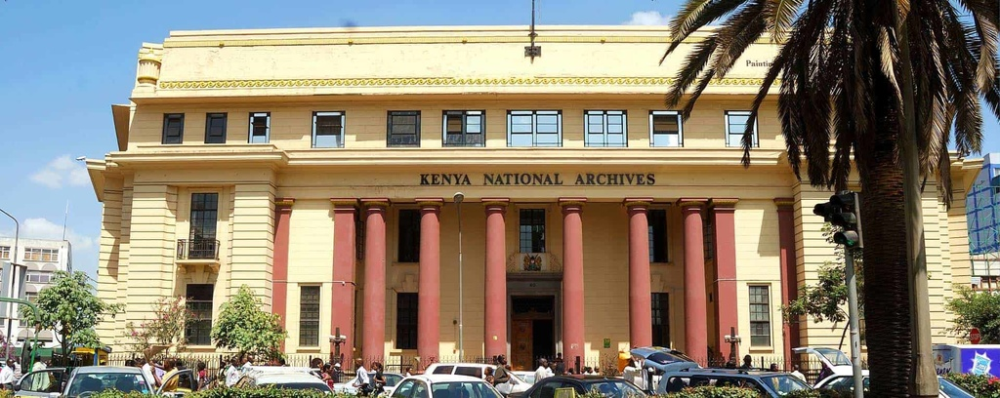
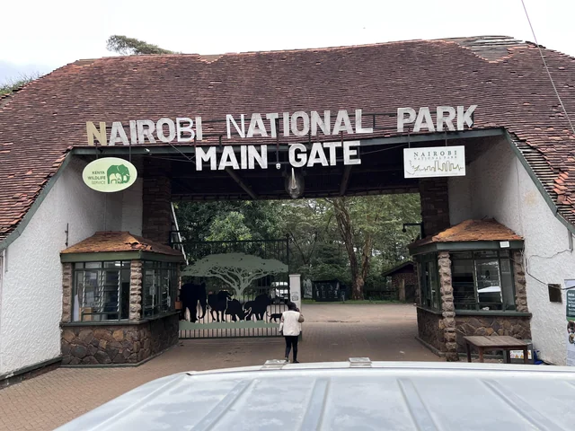
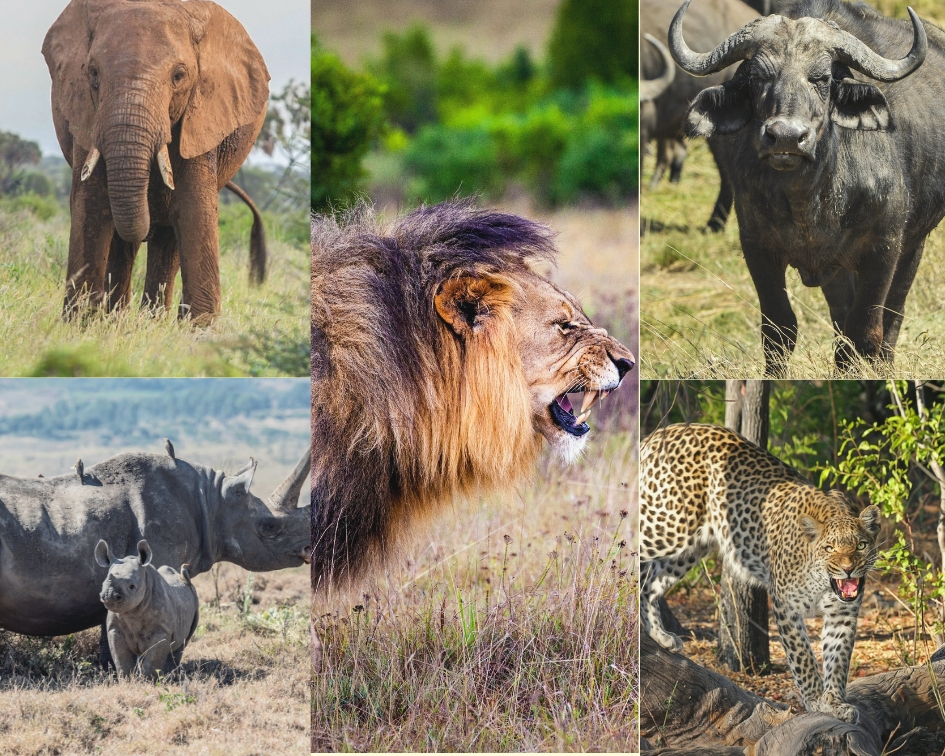

The Kenya National Archives is a building located in Nairobi city County,Kenya. Its main function is to preserve old records on the scientific lines for posterity so that valuable records may not be destroyed with the passage of time.

It is a National Park located in kenya,Nairobi,as per its name. It has been considered as the world's only wildlife capital that plays host to a wide variety of wildlife, birdlife and the best scenic views from the park and beyond

Nairobi National Park is well known for wildlife such as;
